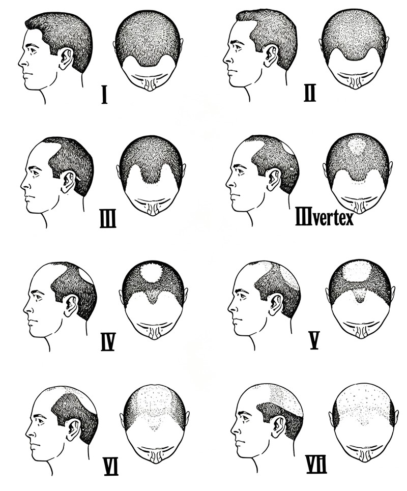
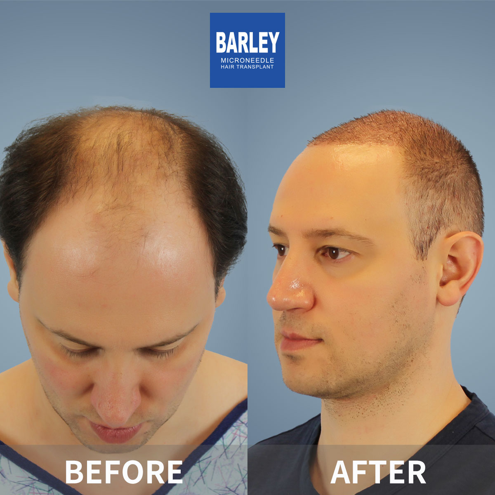
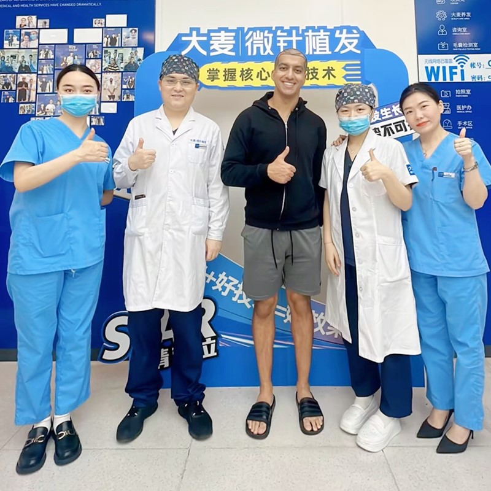

Complete hair restoration for advanced baldness

Baldness transplant is a specialized procedure for patients with extensive hair loss across the frontal, mid-scalp, and crown areas. Unlike minor touch-ups, this comprehensive approach addresses large treatment zones — often requiring 3,000 to 6,000+ grafts distributed strategically for maximum visual impact.
Frontal + Mid-scalp + Crown
Depending on baldness extent
Single or two-session approach
Check if baldness transplant is right for you
Significant hair loss across frontal and crown areas with visible bald zones
Adequate healthy follicles at the back and sides for transplantation
Understanding that results depend on donor supply and may require multiple sessions
May need beard hair supplementation or staged procedures for optimal coverage
Clear breakdown by baldness severity
Zone-by-zone restoration for maximum visual impact
We begin by framing your face with a conservative, age-appropriate hairline. This zone receives the highest graft density because it's most visible in face-to-face interactions. A well-designed hairline instantly transforms your appearance.
The area between hairline and crown receives moderate-density grafts to create a seamless transition. We use calculated distribution patterns that provide solid coverage while conserving grafts for the crown area.
The crown receives slightly lower density than the frontal zone because it's less visible in face-to-face interactions. This doesn't mean it looks thin — it's carefully optimized for the best overall visual balance given your donor supply.
Trusted expertise for the most challenging cases
Our surgical team has successfully treated thousands of Norwood Stage 5-7 patients, developing refined protocols that deliver consistent, natural-looking results — even in the most challenging situations with limited donor supply.
We apply a data-driven approach to distribute your available grafts across the treatment area for maximum visual impact. Every graft is carefully accounted for and placed exactly where it will make the greatest difference.
Our international patient coordinators communicate fluently in English, guiding you smoothly through every step — from initial consultation through surgery, recovery, and follow-up care.
Specialized treatment for Norwood Stage 5-7 cases with intelligent graft distribution

If you have been living with advanced baldness for years and assume that transplant is no longer an option, we invite you to reconsider. Our surgical team specializes in the most complex hair loss cases and has developed proven techniques that deliver outstanding results. We strategically distribute your available donor hair to achieve maximum coverage and a naturally dense appearance.
Intelligent graft allocation for each zone
Up to 6,000+ grafts in total
Staged procedures for optimal results
100,000+ successful procedures
From advanced baldness to a naturally full head of hair
Comprehensive evaluation of donor hair availability and graft capacity
Strategic graft allocation across all treatment zones
Follicle harvesting with 0.6mm precision microneedle FUE
Age-appropriate hairline crafted with highest-density grafts
Strategic implantation across mid-scalp and crown areas
Dedicated recovery support with 18-month growth tracking
Why thousands trust us with their most challenging cases
Advanced baldness cases require more than technical skill — they demand strategic thinking. Our surgeons approach each case like a chess match, carefully planning every step to achieve the best possible outcome with the donor resources available. This level of expertise comes from handling thousands of complex cases over nearly two decades of practice.
We do not simply transplant hair — we engineer results. By prioritizing the most visible areas and using carefully calculated density gradients, we create the appearance of fullness that far exceeds what the actual graft count would suggest. Patients are consistently surprised by how natural and complete their results look.
Every baldness transplant we perform is designed with the next 20 years in mind. We position your hairline at a mature, age-appropriate level, conserve donor reserves, and plan for potential future sessions. This forward-thinking approach ensures your results remain natural and proportionate throughout your life.
A globally recognized leader with nearly two decades of proven results
Pioneers in microneedle hair transplant technology since 2006, continuously refining techniques for superior outcomes
All directly operated with uniform, rigorous quality standards across every location
Proprietary microneedle and implant pen systems that deliver finer, more natural-looking results
Trusted by patients from over 60 countries who travel to China for exceptional results
End-to-end English support from your first inquiry through recovery and follow-up care
Hospital-grade facilities with strict sterilization protocols and comprehensive patient monitoring
See the transformations our baldness transplant patients have achieved


Moments of joy with our patients after their transformation

Celebrating with our medical team after a successful procedure

Delighted with outstanding results and our caring doctors

Another patient thrilled with their transformation

Patient with our specialist before heading home

Satisfied patient with Dr. Chen post-treatment

Excited patient showing off their new look

Patient delighted with their natural results

Patient starting fresh with renewed confidence
Hear from our satisfied patients around the world
I was Norwood 6 with a shiny bald crown and completely bare vertex. Honestly thought I'd never have hair again. The team at Barley mapped out 4,200 grafts across two sessions. What blew me away was how they handled the crown swirl — the radial direction planting looks exactly like a natural whorl. At 16 months, I've got 80% of the density I had at 25. My own daughter didn't recognize me in my profile picture.
Norwood 7 here — bald top, thin sides, I was sure my donor supply wasn't enough. Barley's plan was genius: 3,100 scalp grafts for the hairline and mid-scalp, then 900 chest hair grafts packed into the crown. I was skeptical about body hair, but the chest hair texture blends perfectly at the back. Nobody can tell it isn't all scalp hair. I haven't felt this young since college.
I'm 54 and went from Norwood 5 to a full head of hair in two mega-sessions of 3,500 then 1,800 grafts. The density isn't quite my 18-year-old level, but that's exactly what we discussed — they recommend natural density for a man my age, and that's exactly what I got. It looks like normal male-pattern fullness, not a wig or a fake pluggy look. My barber asks for clinic details every time I visit.
What worried me most about Norwood 5b was whether the crown would end up looking like a helmet. Barley used their so-called strategic density distribution: heavier at the hairline, slightly lighter through the mid-scalp, natural-looking swirl at the vertex with slightly lower density. The result is so convincing I've started swimming without a cap for the first time in 15 years. 3,800 grafts, one session — worth every cent.
I'm Norwood 6 and had such thin donor density at the back that two other clinics refused me. Barley told me honestly that we'd go for visual coverage, not maximum density. They placed 2,900 grafts in a single session, focusing on the front 60% and the visible perimeter of the crown. The result from a normal viewing distance is a full head of hair. Nobody stands close enough to notice that it isn't teenage density — and that's perfect for me.
I was terrified a Norwood 6 restoration would leave me looking like I'm wearing a permanent hair system. The Barley surgeons explained how they use feathered single-hair grafts for the first three rows, then gradually build density, plus a natural-looking swirl with clockwise angulation at the crown. 4,700 grafts over two procedures later, my wife — who has known me bald for 14 years — says it looks like my hair from our wedding photos. I couldn't ask for a better compliment.
Experience our modern and comfortable facilities

Our state-of-the-art facility

Relax in our premium lounge

Sterile and advanced

Private and professional

Comfortable post-op space

Welcoming entrance
Everything you need to know before starting your hair transplant journey
Click to copy contact information
15810155700
+86 13730143529
hairtransplant@qq.com

Everyone's hair loss journey and solution are unique due to a variety of factors. Our hair transplant experts will assist you in determining the root cause and the best solution for your hair transplant plan. If you have any questions, please ask; we are happy to assist.